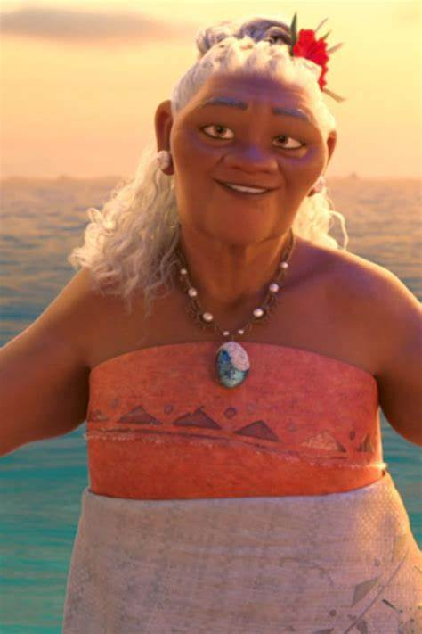
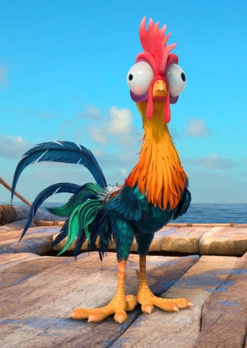
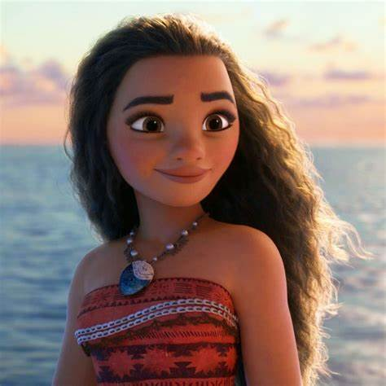
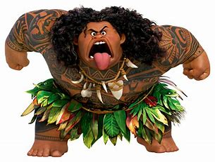

| PERSONAJES | DESCRIPCION |
 |
abuela:Tala |
 |
Heihei color: verde con amarillo y rojo ojos:negros |
 |
princesa:Moana Padres: Chief tui,Sina Creadores: Walt Disney Pictures Color de ojos: cafes Color de cabello: negro y largo |
 |
amigo Maui |